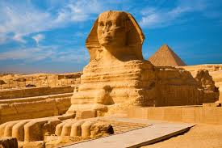
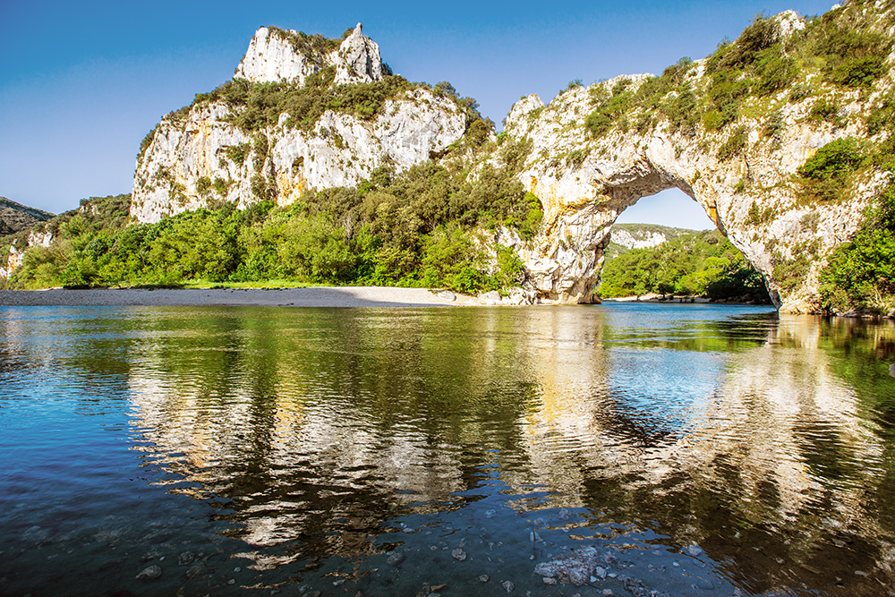

L'Égypte est un pont entre l'Afrique du Nord-Est et le Moyen-Orient et son histoire
remonte à l'époque des pharaons. Des monuments millénaires bordent les berges de la fertile vallée du
Nil,
notamment le sphinx et les pyramides colossales de Gizeh. La ville de Louxor abrite le temple de Karnak
et
ses hiéroglyphes, ainsi que les tombeaux de la vallée des rois. Le Caire, la capitale, regorge de sites
ottomans, comme la mosquée Mohammed Ali ou le musée égyptien et ses trésors d'antiquités.

La Guadeloupe : Territoire français d'outre-mer, la Guadeloupe est un groupe d'îles
situé dans le sud de la mer des Caraïbes. Ressemblant à un papillon, ses deux plus grandes îles sont
séparées par la Rivière Salée. L'île vallonnée de Grande-Terre possède de longues plages et des champs de
canne à sucre. Sur l'île de Basse-Terre, le parc national de la Guadeloupe abrite les chutes du Carbet et le

Londres: la capitale de l'Angleterre et du Royaume-Uni, est une ville moderne dont
l'histoire remonte à l'époque romaine. En son centre se dressent l'imposant Parlement, l'emblématique Big
Ben et l'abbaye de Westminster, lieu de couronnement des monarques britanniques. De l'autre côté de la
Tamise, le London Eye, la grande roue, offre une vue panoramique sur le South Bank Center, et toute la
ville.

Savoie: Le département de la Savoie est un département français de la région Auvergne-Rhône-Alpes, dont le chef-lieu est la ville de Chambéry. Ses habitants sont connus sous le nom de Savoyards. L'Insee et La Poste lui attribuent le code 73 .